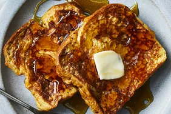

Simple and Quick French-Toast

Ingredients
- ⅔ cup milk
- 2 large eggs
- 1 teaspoon vanilla extract (Optional)
- ¼ teaspoon ground cinnamon (Optional)
- salt to taste
- 6 thick slices bread
- 1 tablespoon unsalted butter, or more as needed
Steps
- Whisk milk, eggs, vanilla, cinnamon, and salt together in a shallow bowl.
- Lightly butter a griddle and heat over medium-high heat.
- Dunk bread in the egg mixture, soaking both sides. Transfer to the hot skillet and cook until golden, 3 to 4 minutes per side. Serve hot.
Lovely basic Crêpes

Ingredients
- Flour
- Eggs
- Milk
- Water
- Salt
- Butter
Steps
- Whisk the flour and eggs.
- Gradually add the milk and water.
- Scoop the batter onto a hot griddle.
- Cook until lightly browned on the bottom.
- Flip and continue cooking until done on both sides.
Take me back